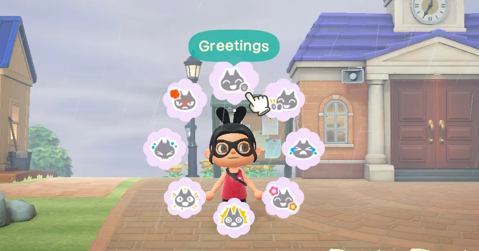
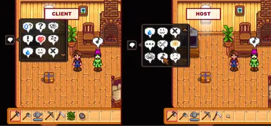

Speech Accessibility Features!
Speech Accessibility Features are game features that are designed to help people who struggle with verbal communication play different games!
Some examples of these features are:
- Making sure speech input is not a mandatory feature in your game, or can be turned off
- For online multiplayer games, allow a preference to be set for players who are willing to play without voice chat
- Provide visual communication systems for multiplayer games
- Base speech recognition on volume threshold instead of words

